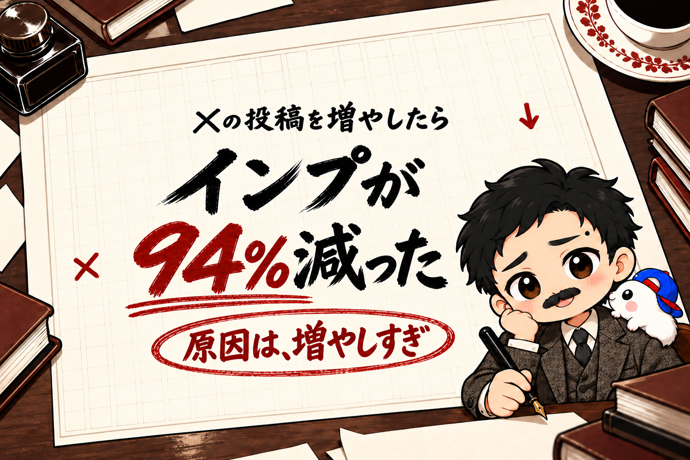

Xのインプが、1か月で94%減りました(17分の1)。
原因は、「投稿の増やしすぎ」でした。
ぼくはXの投稿をAIに任せています。
Xの発信には、短い「ポスト」と、長文の「記事」の2つがあります。
AIに任せると、本数はいくらでも増やせます。
それで本数を増やしたら、1本あたりのインプが下がり、合計も増えませんでした。
記事の1日のインプは、4,885から約290まで落ちました。
この記事では、調べて分かったことを3つ書きます。
- どれくらい落ちたか
- なぜ落ちたか(Xのしくみ)
- 対策して、どうなったか
この記事を書いた人

この記事は、Xの3つのアカウントの投稿をAIに任せて、毎日のインプを記録してきたきくりんが書いています。
1. どれくらい落ちたか → 記事は94%減(17分の1)、ポストは半分以下
| 週 | 記事の1日のインプ | ポストの1日のインプ |
|---|---|---|
| 9/22〜28 | 4,885 | 約3,650 |
| 10/6〜12 | 1,842 | 約2,320 |
| 10/20〜26 | 603 | 約1,890 |
| 10/27〜30 | 約290 | 約1,400 |
ぼくのいちばんインプが多かったアカウントの数字です。
記事のインプは94%減(17分の1)、ポストのインプは半分以下になりました。
2. なぜ落ちたか → 本数を増やしたアカウントだけが落ちた
| アカウント | 1日の本数 | ポスト1本あたりのインプ |
|---|---|---|
| A(本数を増やした) | 5本 → 8〜9本 | 279 → 139 |
| B(本数を増やした) | 10本 → 16本 | 109 → 60 |
| C(本数を変えない) | ずっと5本 | 44 → 103 |
※1本あたりのインプは、その週に出したポストの真ん中の値です。
原因を分けるために、ぼくの3つのアカウントを比べました。
Xの側の変化が原因なら、3つとも落ちるはずです。
結果は、本数を増やした2つだけが、1本あたり半分になっていました。
本数を変えなかった1つは、同じ時期に上がっていました。
いちばんインプが多かったアカウントでは、ポストだけでなく、記事の本数も同じ時期に増やしていました。
| 時期 | 記事(1日) | ポスト(1日) | 起きたこと |
|---|---|---|---|
| 〜10/5 | 1本 | 5本 | 9月末の記事2本が大きく伸びた |
| 10/6〜 | 2〜3本に増やす | 7本に増やす | 記事の1本あたりのインプが約4割減 |
| 10/13の週 | 2〜3本 | 7本 | 記事の合計が先に落ちた(1,842→849) |
| 10/18〜 | 3〜5本に増やす | 8〜9本に増やす | ポストの合計も落ちた(約3,000→約1,900) |
記事もポストも、本数を増やしてから1〜2週間で落ちました。
先に落ちたのは記事で、ポストはそのあとです。
「たくさん出せば、インプも増える」と思っていたのは、ぼくの思いこみでした。
3. なぜそうなるのか → Xは記事を重く見て、同じ人の2本目から点数を下げる
| 同じ人の投稿 | 点数の倍率 |
|---|---|
| 1本目 | 100% |
| 2本目 | 62.5% |
| 3本目 | 43.8% |
| 4本目 | 34.4% |
| 5本目 | 29.7% |
| それより後 | 25%に近づく |
まず、前提として、Xは記事を重く見ています。
ぼくが確かめたのは3つです。
- X公式は、2026年1月に「いちばん読まれた記事に100万ドル」を出すと発表しました。収益の分配でも、記事のような長い投稿を重く数えると伝えられています
- Xが公開しているおすすめ欄のコードには、記事だけに点数を足す設定は見当たりませんでした。ただ、クリック(+0.3)や、開いたあとに読んでいる時間(+0.4)、リンクをコピーしての共有(+20)に点数がつきます。開いて長く読まれる記事ほど、点数を取りやすい配分です
- ぼくがXの発信を教わったイケハヤさんの『シン・X攻略の教科書』にも、長文が重く評価されること、連投すると1本あたりの評価がうすまることが書かれています(外部の分析をもとにした見立て、とことわりつきです)
【PR】

記事は、1本を強くすれば伸びる形です。
それなのに、ぼくは記事を1日2〜5本に増やしていました。
そのうえで、Xのコードを読んで、本数を増やすと1本あたりが落ちる理由を2つ確かめました。
1つめは、同じ人の投稿を続けて見せないしくみです。
Xは、見る人ごとに、おすすめに出す候補の投稿を集めて点数をつけます。
その候補の中に同じ人の投稿が何本もあると、2本目から点数を下げます。
計算式は「(1−0.25)×0.5の(先にある同じ人の本数)乗+0.25」です。
2本目は62.5%、3本目は43.8%になり、どれだけ増やしても25%より下にはなりません。
ここでの「2本目」は、出した時間の順ではありません。
その人の候補の中で、点数の高い順です。
いちばん点数の高い1本だけが100%で、ほかは下げられます。
そして、このしくみは、ポストと記事を分けていません。
コードでは、同じ人かどうかを「書いた人」だけで数えています。
ポストも記事も、同じ人の投稿として、同じ枠の中で比べられます。
つまり、Xの発信のポストと記事は、別々ではなく、つながっていました。
ポストを増やせば記事が、記事を増やせばポストが、2本目・3本目の扱いになりやすくなります。
ぼくのアカウントで、記事もポストも、両方の本数を増やしたあとに両方落ちたのは、この形と合っています。
2つめは、「興味なし」の重さです。
点数の配分では、いいね1回が+0.5、返信1回が+5.0なのに対して、「興味なし」1回は−47.52です。
「興味なし」1回で、いいね約95回分が消える計算です。
本数を増やして1本ごとの中身がうすくなると、読み飛ばされたり「興味なし」を押されたりしやすくなります。
ぼくが良かれと思って増やした投稿の多くは、同じ話のくり返しと、告知でした。
同じブログ記事を言い回しだけ変えて1日に何本も出したり、教材の予告や案内を何本も出したりしていました。
本数が悪かったというより、本数のために中身をうすめたのが悪かった、と考えています。
※Xは、10月にもおすすめ欄のしくみを何度か変えています。なので、落ちた理由がこの2つだけとは言いきれません。
ただ、同じ時期に本数を変えなかったアカウントは落ちていません。そのため、いちばん大きな理由は本数だと考えています。
▼Xが公開している、おすすめ欄のしくみのコード

4. もう1つの原因 → 打ち手を一度に重ねすぎた
インプが落ちてから、ぼくはあれもこれも直しました。
数えてみたら、48日間で投稿のルールを79回変えていました。
いちばん多かった週は、1週間で24回です。
その結果、どれが効いたのか、どれが悪かったのかが分からなくなりました。
ほとんどの打ち手が、ほかの変更とまざって判定できない状態です。
AIに任せると、直すのも一瞬です。
その手軽さで、変える回数が増えすぎていました。
5. 対策したこと → 本数を戻して、1回に1つにした
| 対策 | 中身 | 判定の日 |
|---|---|---|
| ポストの本数を戻す | 各アカウント1日5本+案内1本 | 1週間後 |
| 記事は1日1本 | 自分で書いた記事だけを出す | 4日後 |
| 変えるのは1回に1つ | 変えたら3日は次を入れない | 毎回 |
やったことは、増やす前の形に戻すことです。
新しい打ち手を足すのはやめて、悪くなる前の形に戻しました。
そして、変えるのは1回に1つだけにしました。
変えた日と、判定する日を先に決めてから変えています。
6. 対策してどうなったか → まだ2日。1本あたりは戻り始めた
| 日 | ポスト1本あたりのインプ |
|---|---|
| 10/20〜26の週(増やしていたころ) | 139 |
| 10/31(戻した初日) | 116 |
| 11/1 | 214 |
※いちばんインプが多かったアカウントの数字です。
まだ判定できる日数ではありません。
1日で倍近くになっても、たまたまの日かもしれません。
記事は4日後、ポストは1週間後に、同じものさしで判定します。
結果が出たら、この続きで書きます。
まとめ
Xのインプが落ちて、分かったことは3つでした。
- 本数を増やしたアカウントだけ落ちた → Xは同じ人の2本目から点数を下げる
- 打ち手を重ねすぎて、どれが効いたか分からなくなった
- 本数を戻して、変えるのは1回に1つにした → まだ2日、判定はこれから
AIに任せると、増やすのも直すのも一瞬です。
その手軽さが、今回は裏目に出ました。
判定の結果は、また書きます。
▼ネタの作り方から、AIで教材にまとめて売るまで、やったことを1冊にまとめてあります
フォロワーゼロから利益95.8万円まで、54日間の数字と失敗と手順を、全部書いた教科書です。
録音から記事、教材、販売ページ、売れたあとの台帳まで。うちで毎日使っているツールも付録に入れました。
『noteから始める「AI×◯◯」コンテンツ販売の教科書｜フォロワーゼロから利益95.8万円』


販売価格は3部売れるごとに2,000円ずつ値上がりします（上限あり）。内容・最新価格は販売ページをご確認ください。